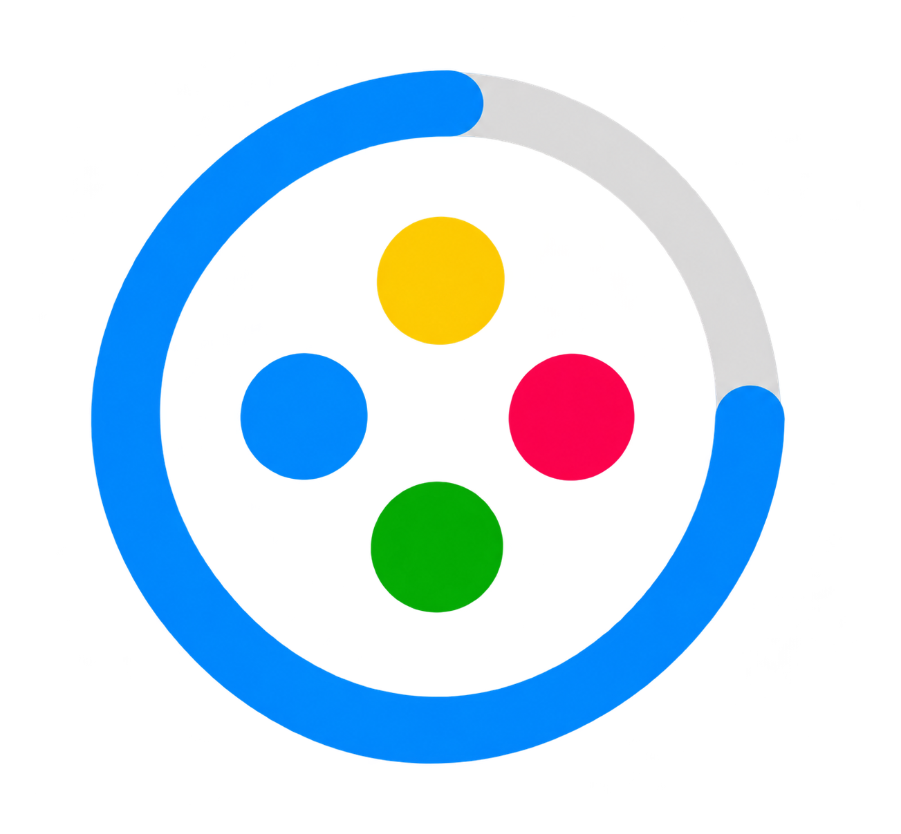

콘솔워크 · 장수연의 작품실PERSONAL ART CONSULTATION
장수연과
작품 이야기장수연 이사 · 작품 소개 및 상담
관심 있는 작품을 보셨나요? 카카오톡에서 아래 ID를 검색해 직접 대화를 시작해 주세요.
장수연 이사 카카오톡 ID · 제공된 명함 기준
pickup24
- 카카오톡에서 친구 추가를 누릅니다.
- ID로 추가를 선택하고 pickup24를 검색합니다.
- 관심 작품과 궁금한 점을 남깁니다.
콘솔워크ART CONSULTATION장수연 이사
SUYEON JANG장수연의
작품실카카오톡 ID pickup24
작품실카카오톡 ID pickup24
장수연 이사 개인 명함 · 앞면과 뒷면 시안
이 QR은 장수연 이사의 상담 안내 화면으로 연결됩니다. 카카오톡 프로필 공유 링크가 확인되면 대화창 직행 링크로 바꿀 수 있습니다.
← 전시 시안으로 돌아가기CONSOLEWORK · SUYEON JANG